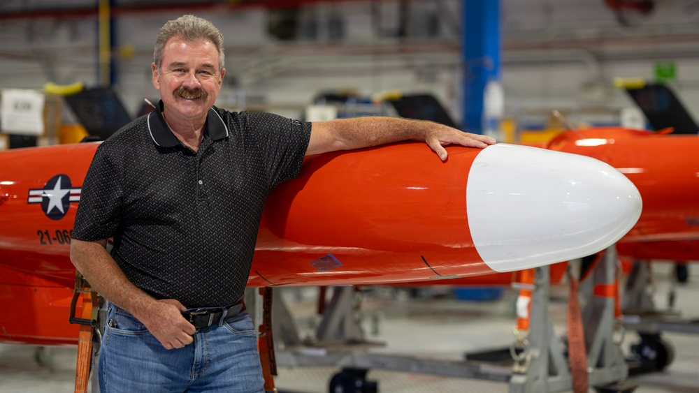

Tim Gantner · DVIDS 10040716 · Public domain · Dwayne Fochler leans on a BQM-177A aerial target in a hangar at Point Mugu, California. Photo dated Oct. 21, 2026, posted Oct. 22, 2026.
DVIDS
A retired Marine drill instructor went back to college so his daughter could finish Vanderbilt
Naval Air Warfare Center Weapons Division said Thursday that Dwayne Fochler, a retired Marine, enrolled at the University of La Verne in 2018 after he learned he could not transfer GI Bill benefits to his daughter as a retiree. The housing allowance and book stipend went to her. He finished a bachelor's degree in 2020. She earned back what Vanderbilt cost within five years. Fochler now heads the Targets and Mission Planning Support Division at Point Mugu and received a 40-year Length-of-Service Award on Sept. 30. The official still, taken Oct. 21 and posted today, shows him with a BQM-177A aerial target in a hangar.
DVIDS · Read source →